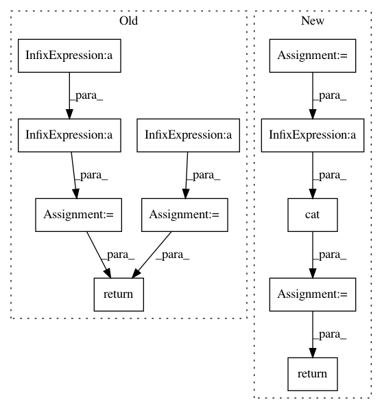

99d4a1e02349f433508fdf95516d2e12cb8b98bb,pyro/distributions/hmm.py,GaussianHMM,rsample,#GaussianHMM#Any#,372
Before Change
batch_shape = self.batch_shape
time_shape = self.event_shape[:1]
init = self.initial_dist.expand(batch_shape).rsample(sample_shape)
trans = self.transition_dist.expand(batch_shape + time_shape).rsample(sample_shape)
obs = self.observation_dist.expand(batch_shape + time_shape).rsample(sample_shape)
mat = self.transition_matrix.expand(batch_shape + time_shape + (self.hidden_dim, self.hidden_dim))
z = _linear_integrate(init, mat, trans)
return (z.unsqueeze(-2) @ self.observation_matrix).squeeze(-2) + obs
def filter(self, value):
Compute posterior over final state given a sequence of observations.
After Change
sample_shape = torch.Size(sample_shape)
obs_dim = self.obs_dim
hidden_dim = self.hidden_dim
obs = self._obs.marginalize(right=self.obs_dim).event_pad(left=self.hidden_dim)
z = _sequential_gaussian_filter_sample(self._init, self._trans + obs, sample_shape)
perm = torch.cat([torch.arange(hidden_dim, hidden_dim + obs_dim, device=z.device),
torch.arange(hidden_dim, device=z.device)])
x = self._obs.event_permute(perm).condition(z).rsample()
return x
def filter(self, value):
Compute posterior over final state given a sequence of observations.
In pattern: SUPERPATTERN
Frequency: 3
Non-data size: 11
Instances
Project Name: uber/pyro
Commit Name: 99d4a1e02349f433508fdf95516d2e12cb8b98bb
Time: 2020-01-29
Author: fritzo@uber.com
File Name: pyro/distributions/hmm.py
Class Name: GaussianHMM
Method Name: rsample
Project Name: stanfordnlp/stanza
Commit Name: be91aa08bda8873d839a77932049e39b0ee11577
Time: 2018-10-17
Author: qipeng@users.noreply.github.com
File Name: models/common/biaffine.py
Class Name: BiaffineScorer
Method Name: forward
Project Name: stanfordnlp/stanza
Commit Name: be91aa08bda8873d839a77932049e39b0ee11577
Time: 2018-10-17
Author: qipeng@users.noreply.github.com
File Name: models/common/biaffine.py
Class Name: PairwiseBiaffineScorer
Method Name: forward